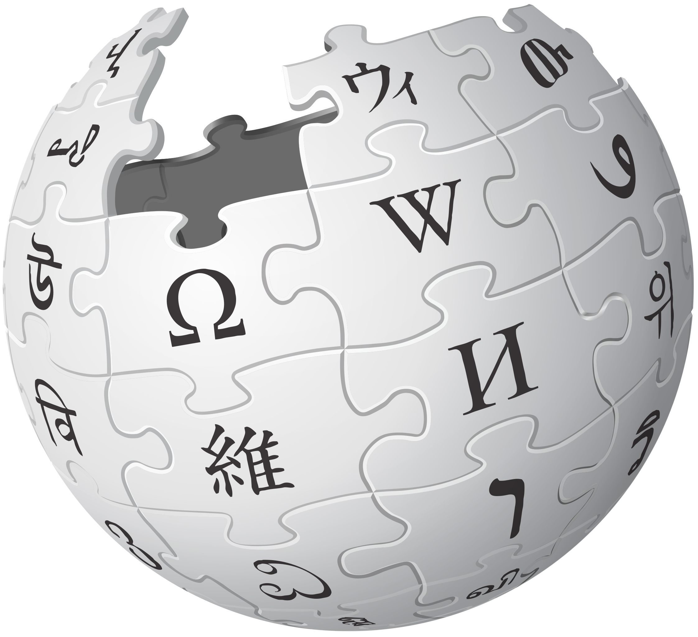
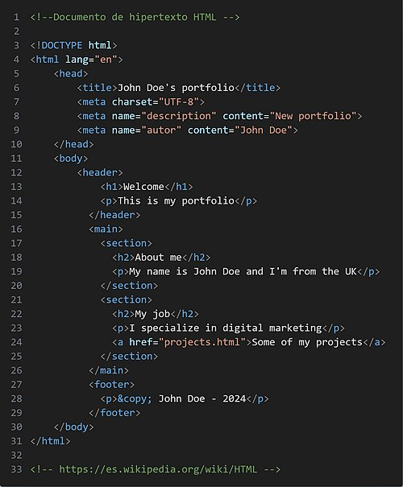
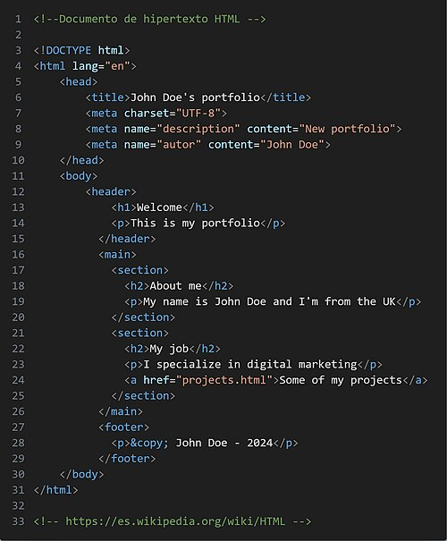

La enciclopedia libre
Menú principal
HTML, acrónimo en inglés de HyperText Markup Language ('lenguaje de marcado de hipertexto'), hace referencia al lenguaje de marcado utilizado en la creación de páginas web. Este estándar que sirve de referencia del software que interactúa con la elaboración de páginas web en sus diferentes versiones. Define una estructura básica y un código (denominado código HTML) para la presentación de contenido de una página web, que incluye texto, imágenes, videos, juegos, entre otros elementos. Este estándar es gestionado por el World Wide Web Consortium (W3C) o Consorcio WWW, una organización dedicada a la estandarización de la mayoría de las tecnologías asociadas a la web, especialmente en lo relacionado con su escritura e interpretación. HTML se considera el lenguaje web más importante y su invención crucial para el surgimiento, desarrollo y expansión de la World Wide Web (WWW). Es el estándar que prevalece en la visualización de páginas web y es adoptado por todos los navegadores actuales.
 

Ejemplo de código fuente escrito en HTML
World Wide Web Consortium (W3C) y Web Hypertext Application Technology Working Group (WHATWG)
https://www.w3.org/html/ y https://html.spec.whatwg.org/multipage/